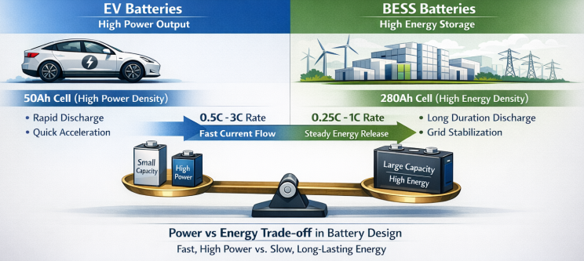
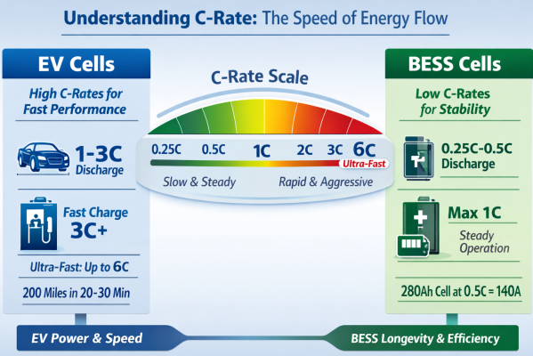
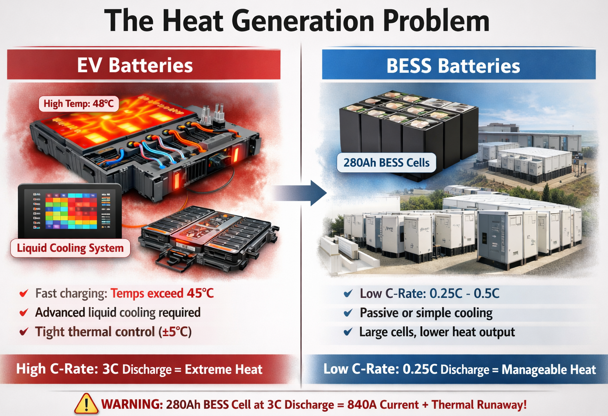
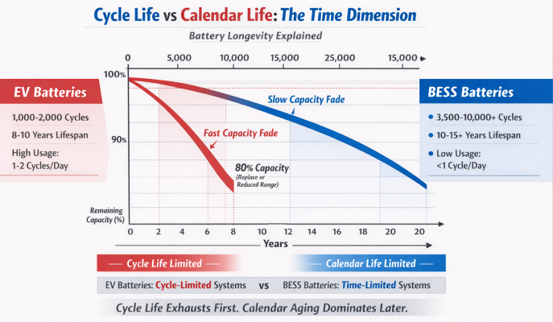
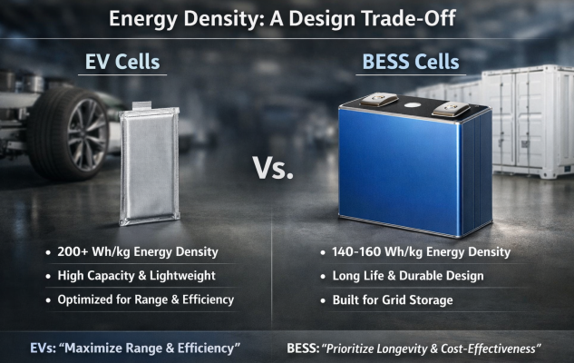
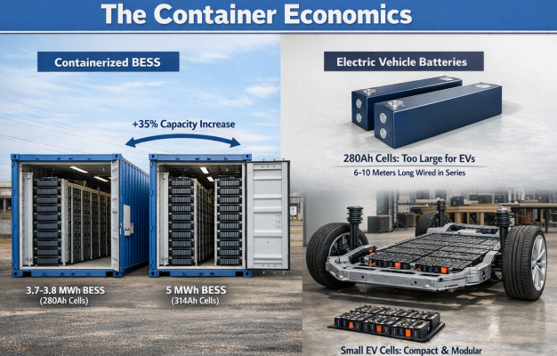
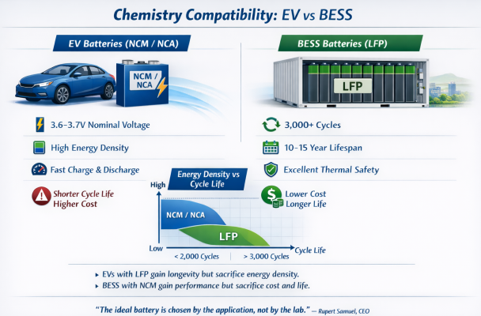
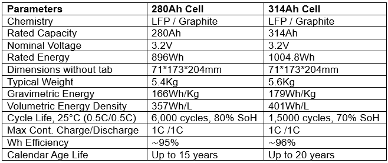

The battery industry operates on a fundamental principle: different applications demand fundamentally different battery designs. Electric vehicles and Battery Energy Storage Systems represent opposite ends of the performance spectrum, and this philosophical divide manifests most clearly in their "ideal" cell capacity ratings. While an EV cell might be optimized at 50Ah or 100Ah, a BESS cell peaks at 280Ah or higher—and this isn't arbitrary engineering choice, but rather the result of radically different operational demands.
The Power Versus Energy Trade-off
At the core of this distinction lies a critical principle in battery engineering: power density and energy density exist in inverse tension. Think of power as how fast water flows from a bottle; energy is how much water the bottle holds. EV batteries prioritize the opening—they must deliver enormous amounts of current in short bursts for acceleration, braking, and highway driving. BESS batteries prioritize the volume—they must store and release steady amounts of energy over extended periods to balance grid supply and demand.

This fundamental difference shapes everything about cell design, starting with capacity. A smaller capacity cell (like 50Ah) can handle higher current rates relative to its size, enabling rapid power delivery. In contrast, a large-capacity cell (like 280Ah) is deliberately engineered to operate at lower rates (0.25C to 1C discharge), providing stable, long-duration energy output without thermal stress.
Understanding C-Rate: The Speed of Energy Flow
The C-rate metric crystallizes this distinction perfectly. A cell's C-rate defines how fast it can charge or discharge relative to its capacity. For example, a 1C rate means the battery can be fully discharged in one hour.
EV cells typically support aggressive C-rates:
- Continuous discharge: 1-3C (full discharge in 20-60 minutes)
- Maximum fast charging: 2-3C, with some advanced cells supporting up to 6C for ultra-fast charging
This capability is essential because EV drivers expect rapid acceleration and the ability to add 200 miles of range in 20-30 minutes during highway trips. The smaller 50-100Ah cell format is deliberately chosen because it can handle these extreme rates without catastrophic heat generation.

BESS cells, by contrast, are engineered for steady-state operation:
- Standard discharge: 0.25C-0.5C (full discharge in 4-2 hours)
- Maximum continuous: 1C (full discharge in one hour)
- Higher C-rates (like 2-3C) are only used for fast frequency regulation applications—but these are exceptions, not the norm.
The 280Ah BESS cell operating at 0.5C discharges 140A—a high absolute current, but low relative to its capacity. This low C-rate is the key to BESS longevity and stability.
The Heat Generation Problem
Heat is where the philosophical difference becomes visceral. When a battery operates at high C-rates, it generates enormous heat. A cell being discharged at 3C generates roughly 9 times more heat than the same cell at 1C (heat scales with the square of current).
EV batteries face a thermoelectric nightmare:
- Fast charging generates localized temperatures exceeding 45°C, which accelerates degradation
- Vehicles require sophisticated liquid-cooling systems with refrigerant direct-cooling architecture to prevent thermal runaway during 6C charging
- Advanced thermal management systems monitor cell-level temperatures in real-time and modulate charging current to maintain safety
The small 50-100Ah cell format was partly chosen to increase surface-area-to-volume ratio, making external cooling more effective. Even with aggressive cooling, EV batteries operate within tight thermal windows (±5°C control) during fast charging.

BESS batteries face a different thermal reality:
- Standard 0.25C-0.5C operation generates modest heat, typically manageable with passive or simple active cooling
- The 280Ah large-format cell has lower power density and lower absolute discharge current per unit mass, producing less waste heat
- BESS systems can operate reliably with slower cooling cycles and less sophisticated thermal management, reducing BMS complexity and cost.
If you tried to operate a 280Ah BESS cell at 3C discharge (like an EV cell), it would generate 840A of current—far beyond the design intent—and thermal runaway would be nearly inevitable.
Cycle Life Versus Calendar Life: The Time Dimension
Battery longevity has two distinct components: cycle life (how many charge-discharge cycles before capacity fades to 80%) and calendar life (how many years pass before aging occurs, regardless of usage).
EV batteries prioritize cycle life because vehicles use them frequently:
- Typical cycle life: 1,000-2,000 cycles
- Calendar life: 8-10 years (though good batteries may reach 10-15 years with proper thermal management)
- Real-world vehicles complete 1-2 cycles per day, so they typically exhaust cycle life before calendar life becomes limiting
The smaller EV cell format doesn't require decades of storage life because vehicles are actively used. When an EV battery pack capacity degradation reaches 70-80%, users often accept reduced range or replace the pack.

BESS batteries prioritize cycle life and calendar life equally:
- Cycle life requirement: 3,500-10,000+ cycles (with some advanced 314Ah cells targeting 15,000 cycles)
- Calendar life requirement: 10-15+ years
- BESS systems often operate once daily or even less frequently, so calendar aging becomes dominant. A BESS installed in 2025 may still be operating in 2040, even if it's only cycled 5,000 times.
The large-format 280Ah cell was engineered specifically for this dual-life regime. Its low C-rate operation minimizes cycle-life degradation. Its chemistry (typically LFP—lithium iron phosphate) exhibits superior calendar-life performance compared to nickel-rich chemistries, withstanding 10-15 years of storage-induced aging.
Energy Density as a Design Trade-off
Energy density (watt-hours per kilogram) represents another critical divergence.
EV cells emphasize volumetric and gravimetric energy density because vehicles face hard constraints: weight affects range and efficiency; dimensions affect vehicle packaging. A 50Ah pouch cell achieves 200+ Wh/kg through optimized electrode thickness and material density.

BESS cells sacrifice some energy density for robustness and cycle life. The 280Ah prismatic cell achieves 140-160 Wh/kg—lower than EV cells—because:
- Thicker electrodes with lower porosity maximize charge capacity but reduce power density
- Robust mechanical structure (aluminum housing) adds weight
- Conservative active material loading prioritizes longevity over peak capacity
For BESS applications, this trade-off makes economic sense. Grid storage containers have ample physical space and weight capacity (a 20-foot container holds multiple tons). Energy density matters far less than cost-per-kWh and cycle-life durability.
The Container Economics
This difference becomes dramatic at system scale. A 20-foot containerized BESS using 280Ah cells stores approximately 3.7-3.8 MWh. The newer 314Ah cell variant increases this to 5 MWh—a 35% improvement—within the same footprint. This scaling is possible because BESS designs can accommodate large-format cells; EV designs cannot.
Conversely, an EV cannot use 280Ah cells—they would be 6-10 meters long if wired in series for high voltage, physically impossible to package in a vehicle. The smaller EV cell format is essential for geometric feasibility.

Chemistry Compatibility
While both use lithium-ion technology, the chemistries diverge:
EV cells often employ nickel-rich cathode materials (NCM, NCA) because they enable:
- Higher voltage per cell (3.6-3.7V nominal)
- Higher energy density
- Faster kinetics for rapid charge-discharge

BESS cells predominantly use LFP (lithium iron phosphate) because:
- Superior cycle life: 3,000+ cycles versus 1,500-2,000 for NCM
- Superior calendar life: handles 10+ years versus 8-10 for NCM under equivalent storage conditions
- Better thermal stability and lower explosion risk during long-term operationlinkedin+1
- Lower cost per kWh at large scale
An EV using LFP gains longevity but sacrifices energy density and performance. A BESS using NCM gains performance but sacrifices cost and longevity. Again, the "ideal" cell capacity and chemistry emerge from application context, not engineering vacuum.
The Functional Divergence
The deepest reason for different ideal capacities is functional. An EV cell is optimized for transient response: rapid state-of-charge swings, temperature fluctuations, and unpredictable user behavior (sudden acceleration, highway driving at extreme ambient temps, frequent partial charges). The smaller 50-100Ah format provides granular control and fast thermal response through the BMS.

A BESS cell is optimized for steady-state operation: predictable daily discharge patterns, controlled thermal environment, and systematic charge-discharge cycles. The large 280Ah format minimizes manufacturing complexity, wiring harness cost, and BMS computational load for a given megawatt-hour capacity.
Conclusion
The "ideal" capacity of EV and BESS cells is not arbitrary—it flows inevitably from their operational demands. EV cells must be smaller to handle power density, rapid C-rates, and dynamic thermal stress while remaining physically packable. BESS cells must be larger to achieve cost efficiency, long-duration discharge, and durability across 10+ years and 10,000 cycles.
Attempting to optimize both applications with a single cell type would sacrifice critical performance for each. As one industry metaphor summarizes: EV cells are sprinters; BESS cells are marathon runners. Expecting a sprinter to run marathons—or a marathon runner to sprint—violates the fundamental physics and chemistry that battery design must respect. The "ideal" capacity, therefore, is not a universal constant but rather the culmination of application-specific engineering constraints.